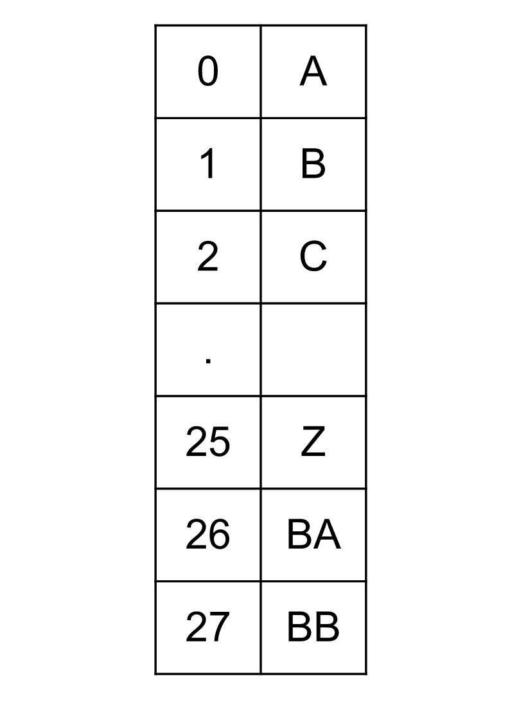

Intuition
In Excel, the columns are letters that correspond to numbers. We start with A = 1. Similarly
2 corresponds to B until 26 for Z. Once we run out of letters,
we start appending them. 27 will correspond to AA, 28 for AB,
and so on. In this problem, we are given the integer which is the column number and we need to return the
corresponding letters for it.
At first glance, it might be tempting to say that these numbers are just base 26, but the catch is that in a base 26
system, the numbers would start from 0. The mapping would be like below:

However, in the problem, we have the number starting from 1, not 0. But we can change them
to process them like base 26 numbers. The important point to observe here is that every column title has the
corresponding column number as a number in base 26 plus one. For example, let's convert the number 2002
to the letters BXZ by representing it as a number in base 26. Note that each part will have an extra
1 added to compensate for the fact that we are starting from 1 in our system. See the
below example for a better understanding of the algorithm:
N = 2002 corresponds to BXZ.
In terms of base 26:
N=(B+1)⋅262+(X+1)⋅261+(Z+1)∗260N = (B + 1) \cdot 26^2 + (X + 1) \cdot 26^1 + (Z + 1) * 26^0
N=(1+1)⋅676+(23+1)⋅26+(25+1)⋅1=2002N = (1 + 1) \cdot 676 + (23 + 1) \cdot 26 + (25 + 1) \cdot 1 = 2002
Steps to get the letters:
1 from N. Now, N = 2001. Take N modulo 26 and convert the result
to the corresponding position in the alphabet. 2001 % 26 = 25, which corresponds to Z,
since we start with A = 0.
N by 26. We have N=200126=76N = \frac{2001}{26} = 76.
N = 0. We subtract 1, so now N = 75. Take it
modulo 26: 75 % 26 = 23. This corresponds to X.
N by 26. We have N=7526=2N = \frac{75}{26} = 2.
1, so now N = 1. Take it modulo 26: 1 % 26 = 1. This corresponds
to B.
Finally, we are done, because N26=0\frac{N}{26} = 0. The
result is BXZ, the reverse order in which we found the letters.
Algorithm
Initialize an empty string ans which would store the column title.
Do the following as long as columnNumber is greater than 0:
1 from the columnNumbercolumnNumber % 26 and append it to the ans
in the end.
columnNumber to columnNumber / 26.Reverse the string columnNumber and return it.
Implementation
Java
class Solution {
public String convertToTitle(int columnNumber) {
StringBuilder ans = new StringBuilder();
while(columnNumber > 0) {
columnNumber--;
// Get the last character and append it at the end of the string.
ans.append((char)((columnNumber) % 26 + 'A'));
columnNumber = (columnNumber) / 26;
}
// Reverse it, as we appended characters in reverse order.
return ans.reverse().toString();
}
}
C++
class Solution {
public:
string convertToTitle(int columnNumber) {
string ans;
while (columnNumber) {
columnNumber--;
// Get the last character and append it at the end of string.
ans = ans + (char)((columnNumber) % 26 + 'A');
columnNumber = (columnNumber) / 26;
}
// Reverse it, as we appended characters in reverse order.
reverse(ans.begin(), ans.end());
return ans;
}
};
Complexity Analysis
Here, NN is the column number given in the problem.
Time complexity: O(logN)O(\log N)
The number of operations would be equal to the number of while loops iterations. In each iteration, the number NN gets divided by 2626. Hence the time complexity would be O(log26N)O(\log{_{26}}{N}). Note that the base of the logarithm is not relevant when it comes to big O, since all logarithms are related by a constant factor.
Space complexity: O(1)O(1)
We only need one string to store the output, but generally the space to store the output is not considered as
part of space complexity and hence the space complexity is constant.